Konzerte
Der Chor präsentiert seine Arbeit regelmäßig in eigenen Konzerten und Gottesdiensten. Neben zwei großen Konzerten am Ende jeder halbjährigen Probenphase veranstaltet der Chor regelmäßig Matinéen und tritt im Rahmen unterschiedlicher anderer Veranstaltungen auf.
- 05.12.2026
-
Adventskonzert: Bach: Magnificat
Berlin (Ort folgt)
- 10.05.2026 · 15:30
-
Treffpunkt Weltzeituhr
Kammermusiksaal Philharmonie Berlin
- 23.11.2025
-
Chorwerke von Lili Boulanger
Großer Saal des Konzerthauses Berlin
- 10.+11.05.2025
-
Hoffnung tragen
Übergangswohnheim Marienfelder Allee und Gedenkkirche Maria Regina Martyrum, Berlin
- 24.11.2024
-
Johannes Brahms: Ein deutsches Requiem, op. 45
Evangelische Auenkirche, Wilhelmsaue 118a, 10715 Berlin
- 10.03.2024
-
VIERSEITIG
Kammermusiksaal Philharmonie Berlin
- 30.09.-01.10.2023
-
Reiselust: Chorreise von Berlin nach Warschau und Krakau
Kościół Akademicki św. Anny (Warschau) und Kościół Bonifratrów Trójcy Przenajświętszej (Krakau)
- 19.+20.11.2022
-
Unser Leben ist ein Schatten – Motetten aus der Familie Bach
St. Annen-Kirche, Panketal und Auenkirche am Volkspark Wilmersdorf
- 19.06.2022
-
Starke Frauen – Sentimentale Männer?
Kammermusiksaal Philharmonie Berlin
- 11.12.2021
-
Bridge of Songs
Berlin
- 18.09.2021
-
Nähe und Distanz
Kirche auf dem Tempelhofer Feld
- 23.11.2019
-
Maurice Duruflé: Requiem
Heilige-Geist-Kirche, Perleberger Straße
- 06.07.2019
-
Von Mythen und Märchen
Flutgraben e.V., Flutgraben 3, 12435 Berlin
- 22.03.2019
-
Best-of-Konzert: 5 Jahre Junger Kammerchor Berlin e.V.
STONE BREWING, Im Marienpark 23, 12107 Berlin
- 15.+16.12.2018
-
J. S. Bach: Weihnachtsoratorium, Kantaten 1-3
Mensa Schulzentrum Zepernick (Panketal) und Heilige-Geist-Kirche (Berlin-Moabit)
- 08.07.2018
-
Ständchen
St.-Lukas-Kirche Kreuzberg, Bernburger Str. 3-5, 10963 Berlin
- 28.01.2018
-
BACH
Berlin
- 09.07.2017
-
Lieder im Freien zu singen
St. Johannis Moabit
- 04.12.2016
-
Machet die Tore weit
Taborkirche Kreuzberg, Taborstraße 17, 10997 Berlin
- 02.07.2016
-
Wein und Wasser
Thomaskirche Kreuzberg, Bethaniendamm 23-27, Berlin
- 23.01.2016
-
Fauré Requiem
Magdalenenkirche Neukölln, Karl-Marx-Straße 201-203, 12055 Berlin
- 03.07.2015
-
Verstohlen geht der Mond auf – A-cappella-Musik vom Dunkeln ins Licht
Apostel-Paulus-Kirche, Grunewaldstraße/Ecke Akazienstraße, 10823 Berlin
- 19.04.2015
-
Matinée-Konzert
Herz-Jesu-Kirche Charlottenburg, Alt-Lietzow 23, Berlin
- 20.12.2014
-
Saint-Saëns: Oratorio de Noël
Paul-Gerhardt-Kirche, Hauptstraße 47-48, 10827 Berlin-Schöneberg
- 30.04.2014
-
Frühlingskonzert
Herz-Jesu-Kirche, Alt-Lietzow 23, Berlin
Plakatarchiv
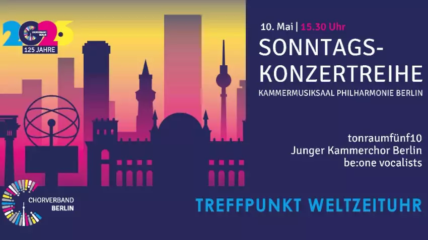
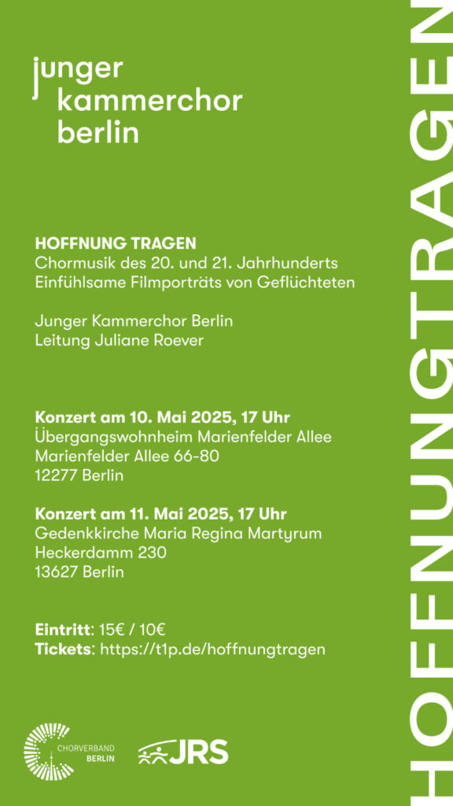
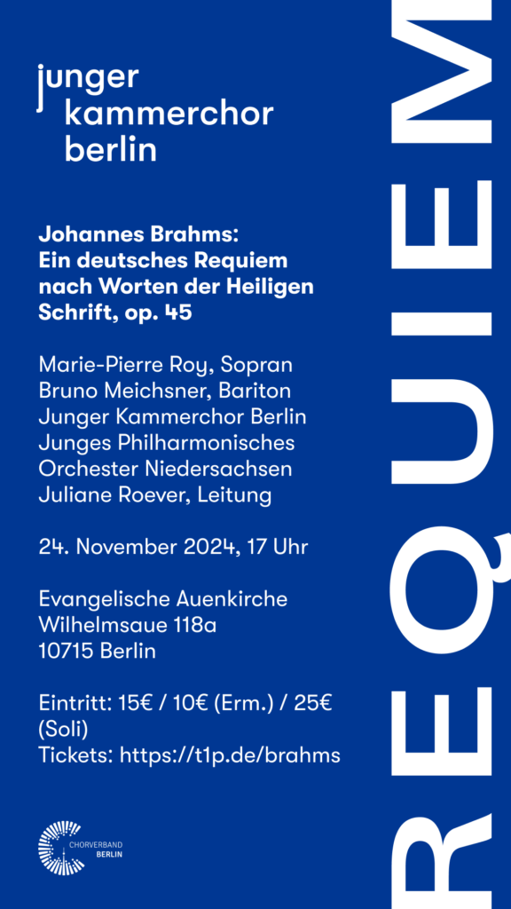
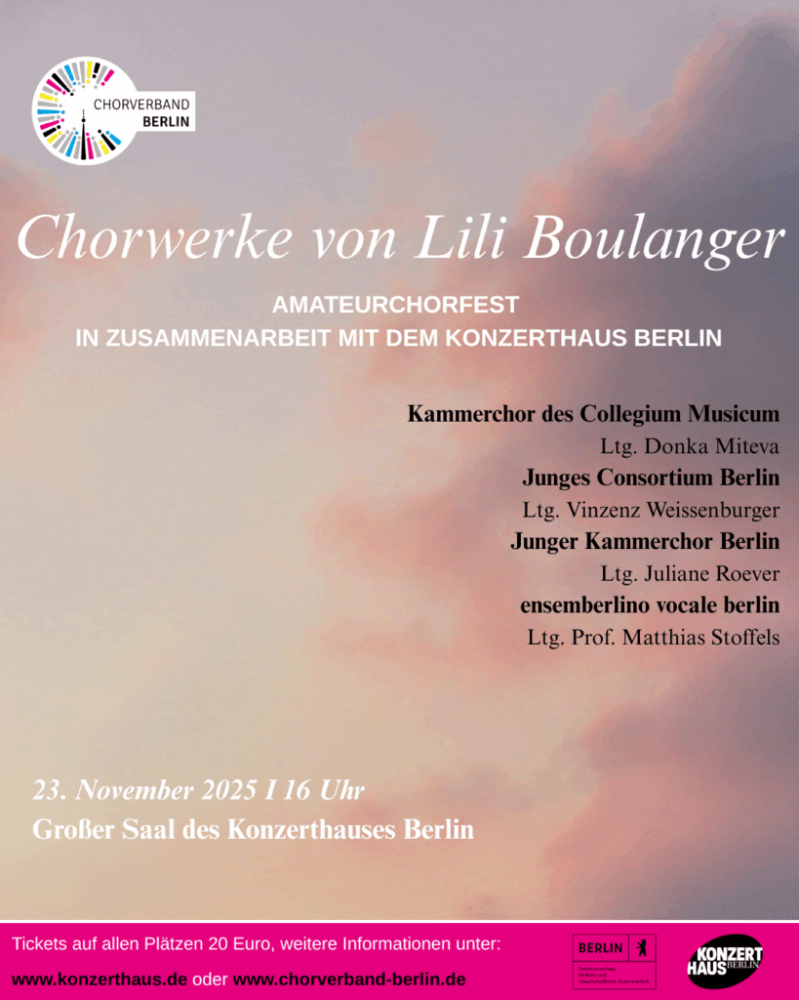
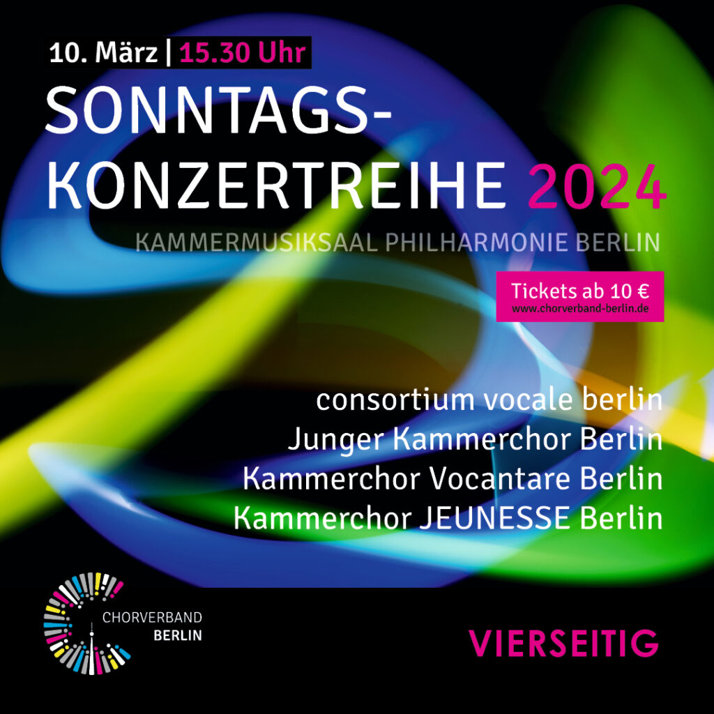
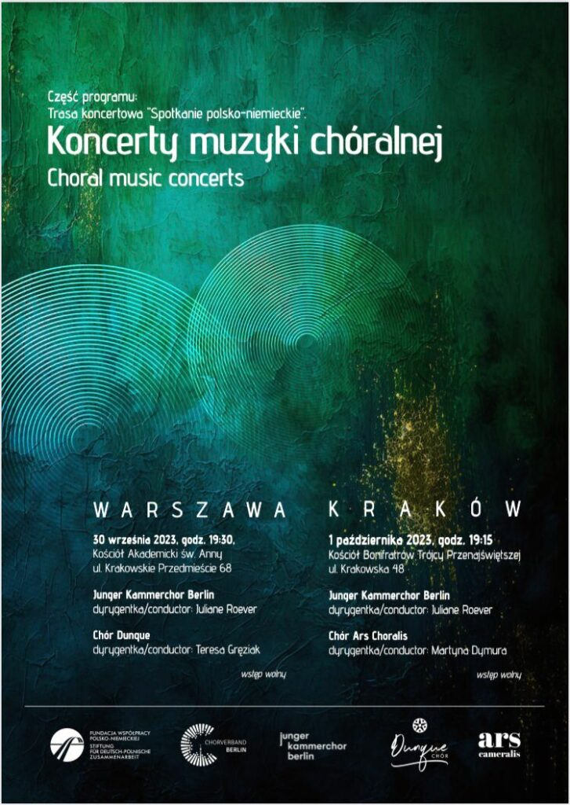
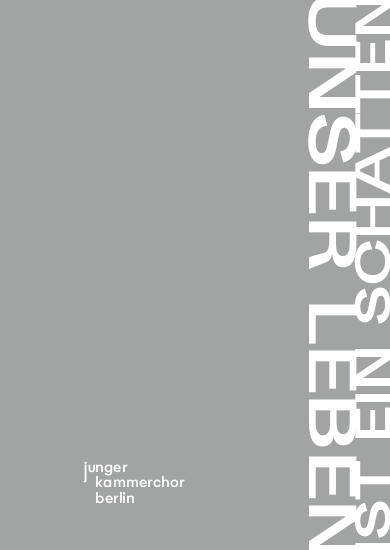
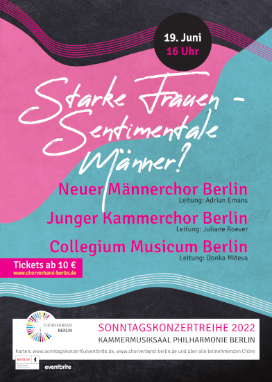
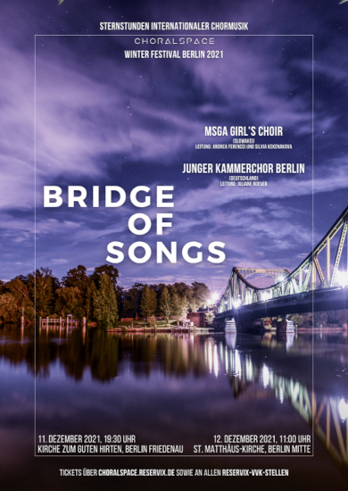
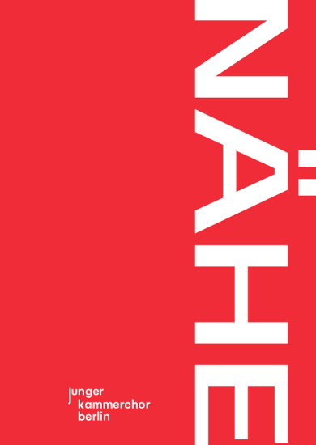
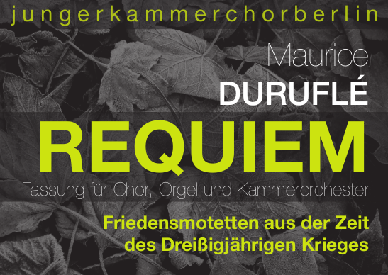
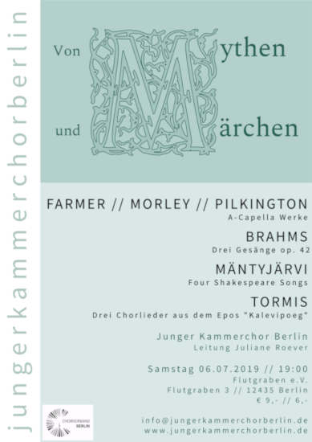
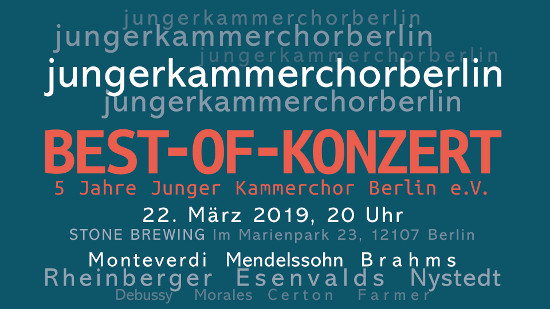
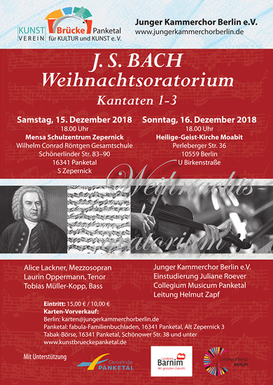
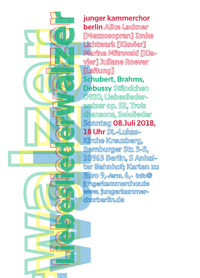
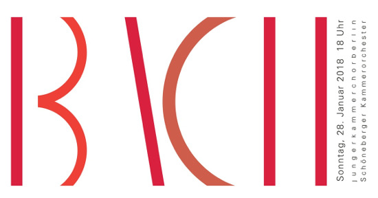
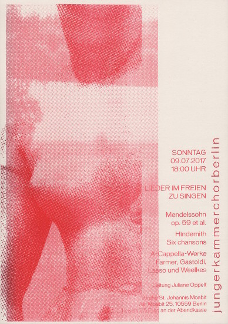
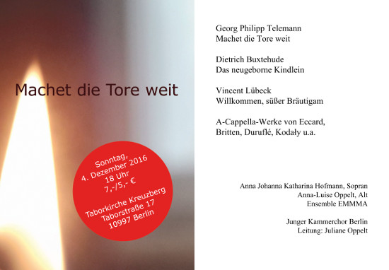
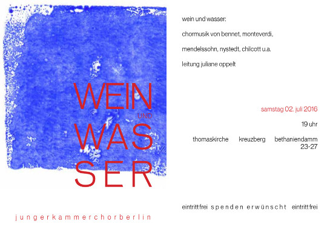
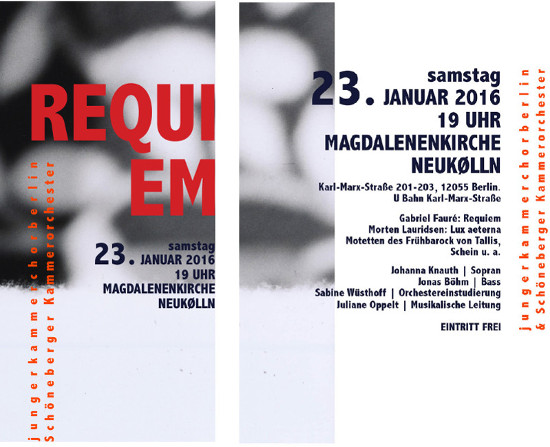
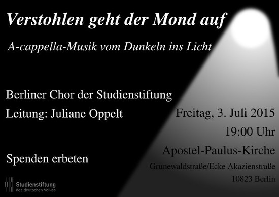
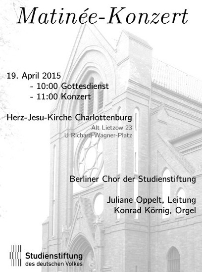
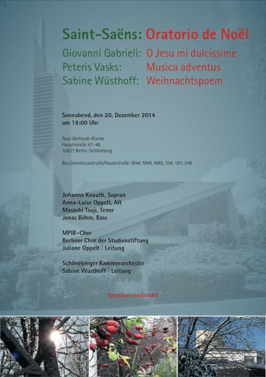
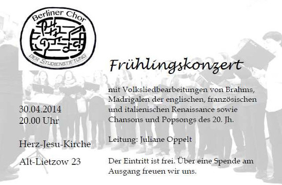